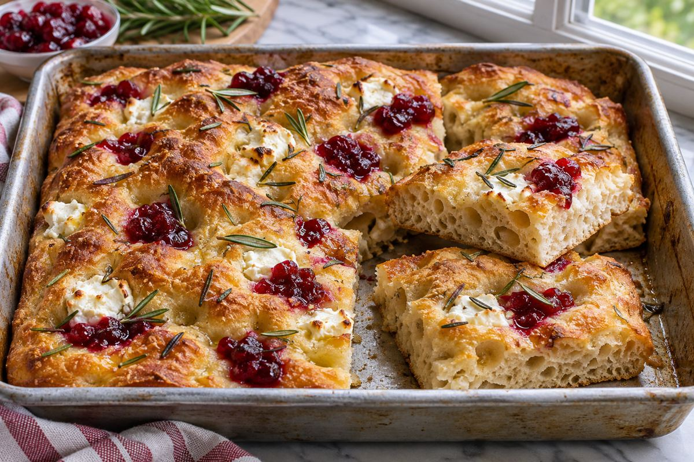

Side · 12 squares · 9 × 13-inch metal pan · About 25 min hands-on, two-day schedule
Cranberry, Goat Cheese and Rosemary Sourdough Focaccia

Ingredient amounts are estimates when scaled. Original recipe and AnyList import remain unchanged.
Ingredients
- 500 g all-purpose flour (bread flour also works)
- 390 g water, room temperature
- 100 g active sourdough starter (100% hydration; equal flour and water by weight)
- 10 g fine salt
- 20 g olive oil, for dough
- 30 g olive oil, for the pan
- 15 g olive oil, for topping
- 90 g thick cranberry sauce, chilled
- 100 g plain soft goat cheese, crumbled and chilled
- 3 g fresh rosemary, finely chopped (up to 4 g for a stronger flavor)
- Flaky salt, optional, a light sprinkle
Instructions
- Mix flour, water, active starter, fine salt and the 20 g dough olive oil until no dry flour remains. Cover and rest 30 minutes. The dough should be wet and sticky; do not add flour to make it kneadable.
- With wet hands, perform 3 sets of stretch-and-folds, 30 minutes apart. During the second set, fold in half the rosemary. Keep cranberry sauce and goat cheese refrigerated until topping just before baking.
- Continue covered bulk fermentation until the dough is aerated, jiggly and roughly 50–75% larger, with bubbles at the edges. Allow about 4–8 hours total from mixing at 72–76°F; a cooler kitchen or weaker starter can take longer. Use the dough cues rather than the clock.
- Cover the bowl and refrigerate the plain dough for 8–16 hours overnight. No loaf shaping or lamination is needed.
- The next day, coat the bottom and sides of a 9 × 13-inch metal baking pan with the 30 g pan olive oil. For extra sticking protection, add parchment on the bottom and oil it too. Gently transfer cold dough into the pan and turn once to coat. Rest covered 30 minutes, then gently stretch toward the corners. If it resists, rest another 20–30 minutes before stretching again.
- Let rise covered until very puffy and bubbly and the pan jiggles when moved, typically 3–5 hours after removing from the refrigerator at 72–76°F. Allow longer in a cool kitchen. Do not top or bake while the dough is still dense.
- Near the end of proofing, heat oven to 425°F with a rack in the lower-middle position. Drizzle the 15 g topping olive oil over the dough. Oil fingertips and press deep dimples across the dough without flattening it completely.
- Distribute the 90 g thick cranberry sauce in small, roughly ½-teaspoon dollops across the dimples; do not spread into a wet blanket. Nestle small crumbles of the 100 g goat cheese into other dimples. Scatter the remaining rosemary, pressing gently into the oily surface, and add a very light sprinkle of flaky salt if desired. Keep toppings mostly nestled into the dough rather than sitting high above it.
- Bake 25–35 minutes, until the bread is deeply golden at the edges, the bottom is crisp and the dough is baked through; the center crumb should be about 200–210°F, measuring away from cheese or sauce pockets. If toppings brown too quickly, tent loosely with foil for the final portion of baking. Timing varies with the pan and oven.
- Rest in the pan 5–10 minutes, then use a spatula to loosen and transfer to a rack. Cool at least 20 minutes before slicing into 12 squares. Cool before covering for transport so the bottom stays crisp. Serve with Smoky Seminole Pumpkin–White Bean Soup.
- Because this bread contains goat cheese, refrigerate within 2 hours of baking or serving rather than storing overnight at room temperature. Reheat refrigerated squares at 350°F for about 8–12 minutes until hot; freeze extras for longer storage. For practice, transport chilled if it will be more than 2 hours before serving.